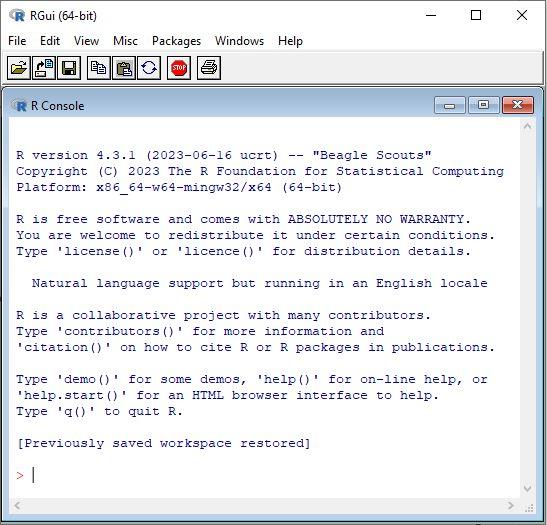

Hello R3 R Basics
As Data Scientists, we will not have to calculate everything by hand, but rather we will rely on a statistical programming language called R. This is an open-source language (meaning anyone can contribute to it) designed to clean, analyze, and present data. Before you begin coding in R you should note that syntax rules do apply and it is an interpreted language (meaning you can run it line by line). One of the benefits of R (and why we are learning it) is that it is a popular, powerful, and flexible language used by Data Scientists throughout the industry.
- Understand what R is and recognize common syntax rules in R.
- Identify and troubleshoot basic errors in R.
- Use R as a calculator by applying arithmetic operations, grouping expressions with parentheses, and interpreting results.
- Create and use variables in R with the assignment operator <- to store and reuse values in calculations.
Supplemental Material
3.1 The R Language
The language is maintained by the Comprehensive R Archive Network (CRAN) and can be downloaded from their website CRAN. Since R is an open-source language, community members can write their own programs and submit them to CRAN for the whole community to use. Because of this, R is constantly evolving and you can almost always find a library or a package that will do the analysis you need it to do. If you have not already downloaded R to your device then I would recommend doing so now so that you can follow along with the rest of this lecture. A picture of the R console can be seen below:

Just because we can run all types of analysis on a dataset does not mean that we should though, as you will not use all of the ingredients in your pantry when you make dinner just because they are available to you. You need to understand what you are doing when you run code or analyze datasets. You should know what your dataset contains and the different data types that you have. You should know the quality of your data and if there are any underlying problems with the dataset, and you should know if any relationships might exist within the dataset.
Knowing all of these things will not only help us in writing code to analyze the data, but it will make our lives easier and save us time. A famous phrase (possibly coined by Army specialist William Mellin) tells us “Garbage in… Garbage out”. He expanded on this phrase with the following explanation: “If the problem has been sloppily programmed the answer will be just as incorrect. If the programmer made mistakes the machine will make mistakes. It can’t correct them because it can’t do one thing: It can’t think for itself.”
3.2 Starting to Code
The R Console will be where we will “submit” our code to be run line by line. Any code you wish to run should be placed after the > symbol. Let’s open up R and type in Hello R and see what happens. We should get an error telling us that there is an unexpected symbol present. This is because R does not understand what the word Hello means. If we want to type in characters/words/strings then we need to do so inside of quotation marks (either “double” quotes or ‘single’ quotes). Below is an example of what your results may look like. Note that the grey box seen below will represent the R console to display the code/output.
Error: unexpected symbol in "Hello R"
"Hello R"[1] "Hello R"'Hello R'[1] "Hello R"Before we continue running code in R, it is important to go over some quick housekeeping notes. To begin, you will place your code after the > symbol. If you see a + on the left-hand side, it means that R is expecting something more to end the previous line (maybe you are missing a quotation mark or parenthesis). Anything you put after # will be considered a comment and nothing on the line after the # symbol will run. It is also important to realize that R is case sensitive so MyData and mydata are different. If you ever would like to access any previous commands then you can have them re-appear by using the up and down arrows on your keyboard. Finally, if you are ever unsure about the exact command syntax then R will help you finish typing the commands (tab completion).
> "I am Dr. McCurdy
+ and I forgot a quotation mark"[1] "I am Dr. McCurdy\nand I forgot a quotation mark"# Words after the pound sign will not run since it is a comment
2 + 3 # Adding 2 numbers together[1] 5
Try it Out
Emmit is running a smoothie stand on campus and he can’t quite figure out how to advertise his business in R. He wants to calculate the price ($2 + $1 for each size increase) and make a digital sign that displays this message in R: “Welcome to Emmit’s Smoothie Stand!” How can he accomplish this task?
Click to see the solution
3.3 Understanding Error Messages
It is also probably time to discuss some of the things that can go wrong when inputting code. The first that might occur (and the most obvious) is a syntax error. This means that you have submitted invalid code (maybe a forgotten comma, an “open” bracket, or misspelled a function name/variable) and R returns an error message. It is important to read the error message! About 95% of the time it will be easy to identify your mistake and fix it. We will see some common syntax errors later on in the course as we get to new material.
Another error that you might make is a semantic error. This occurs when your code is technically correct but it does not do what you expected it to do. For instance, if you are trying to find the mean of a dataset with 10 items and you divide by 11 instead, then R will run it just fine, but you didn’t calculate the mean. These semantic errors are hard to find and figure out, but it does help to run your code line by line to identify where the unexpected result occurs. When in doubt explain your code to a rubber duck! (this means that looking at your code line by line and trying to explain it usually helps you identify the mistake)
Try it Out
Emmit is trying to figure out how many customers he usually gets in a day but he does not think the result makes sense. The past 7 days he has had the following numbers: 14, 18, 21, 19, 17, 23, 20. Looking at the following code, help him determine his average daily customer count:
> 14 + 18 + 21 + 19 + 17 + 23 + 20) / 8
Click to see the solution
3.4 Using R as a Calculator
To get started with R, we should think of it as a calculator. Any mathematical operations we wish to do we can. Below are a few examples of the commands we can use:
# Addition and Subtraction: use + and -
7 + 3 - 19 + 8[1] -1# Multiplication and Division: use * and /
3 * 8 / 7[1] 3.428571# Exponentiation: use ^
4 ^ 5[1] 1024# Parenthesis for grouping calculated expressions: use ()
(3 + 5)/3[1] 2.666667# Integer Division (floor): use %/%
18 %/% 7[1] 2# Modulus (remainder): use %%
18 %% 7[1] 4# Example showing how the floor and remainder function work:
18/7[1] 2.57142918 %/% 7 + 18%%7 / 7[1] 2.571429R follows the standard Order of Operations, with the order going P-E-%-MD-AS. This means that R will always carry out items in the Parenthesis before going on to things outside of the parenthesis. Next, R will look for Exponentiation, with the operations being carried out from right to left. This means that \(2 \wedge 2 \wedge 3\) is not \(4 \wedge 3\) but rather \(2\wedge8\). Any special function indicated with a % will be next. Then Multiplication and Division are evaluated left to right (which is typical) with Addition and Subtraction being evaluated last (also left to right). It may take some getting used to, so I always recommend putting more parenthesis than is required so that you can have peace of mind that the calculation is what you intended it to be.
For values that contain a certain number of significant figures (usually more than 7), R will represent the results in scientific notation. This is represented with an \(e\), which stands for \(\times 10^n\). For instance, \(3.21\times 10^{-7}\) is represented in R as \(3.21e-7\).
102938303820387203828373[1] 1.029383e+23.00000002828[1] 2.828e-082.31e-2[1] 0.02313.9282e12[1] 3.9282e+12
Try it Out
Emmit is competing in a local math scavenger hunt. He finds a list of strange math expressions written on a whiteboard and he decides to use R to carry out the calculations. What should the results be for each expression?
- \(\displaystyle 10^2 + \frac{3\times 60}{8 + 3} - 3\)
- \(\displaystyle \frac{5^3\times(6-2)}{61-3+4}\)
- \(\displaystyle \left(\frac{2^{2+1}}{6^{-2^{2.5}}}\right)^\frac{1}{2}\)
Click to see the solution
3.5 Variables
In addition to using R as a calculator, we can also save values as variables. Variables will allow us to provide a reference (a name) so that we can reuse the value later. To create a variable we will use the \(<\)- operator (also called the assignment operator) with the value we want to save “pointing” at the variable name. Like everything else in R, variables are case-sensitive so we should make them short and meaningful so that they are easy to type in over and over. We will be able to name them (almost) anything we want, as the names can contain letters, numbers, periods, or even underscores.
value1 <- 3
value2 <- 5
value1[1] 3value1 + value2[1] 8value3 # will have a syntax error since value3 does not existError: object 'value3' not found
value3 <- value1*value2
value3[1] 15These variables will allow us to save results for later use. If we anticipate having to type in a calculation multiple times then we might as well create a variable (type once; use often). It should be mentioned that some variable names are “off-limit”, such as the name of R functions and commands. We will discuss that later in more detail though.
x <- 1*2 + 3*4 + 5*6 + 7*8
y <- 9^3 + 8^3
z <- (5 + 3^2) ^2
x * y[1] 124100y / z[1] 6.331633
Try it Out
Emmit is running a smoothie stand at the weekend farmer’s market. He sells two types of smoothies: Berry Blast and Tropical Twist. Each Berry Blast sells for $4 and each Tropical Twist sells for $5. On Saturday, he sold 9 Berry Blasts and 6 Tropical Twists. Let’s help Emmit calculate how much money he made using R using variables.
Click to see the solution
3.6 The R Environment
We interact with R through environments. Think of it as filing cabinets. If we define a variable called x in one drawer (let’s call it Drawer 1), then when we open up Drawer 2 we will not be able to find x. This is because it is not in Drawer 2, it is in Drawer 1. This is known as a workspace, and most of the time we will be defining variables in the global environment, so we will not have to worry about different drawers. But, any variable that we initialize in R will remain in R as long as our session is still active. We can see what variables and objects currently exist in our environment with the ls() function.
ls()[1] "value1" "value2" "value3" "x" "y" "z" ls(pattern="^val") # can search for certain patterns[1] "value1" "value2" "value3"If we ever need to remove a specific object in R from our workspace then we can do this with the rm() function. We should be careful with this though, as we cannot reverse the removal of a variable. If we need to clear our whole workspace then we can remove all objects with rm(list=ls()).
x[1] 100rm(x)xError: object 'x' not found
If you need to close R then you can either close it by using the command q() or by just exiting the window. When you close R it will ask you if you want to “Save workspace image?”. What this is asking is if you would like to save all of your current objects in R (all of the variables and functions you have made) and have them available to you in your future R sessions. If you select yes then it will be saved under your current directory under the file .RData. Most things we will be doing in this class will not need to be saved in this manner as it will be easy to recreate everything quickly if we do need something again.
What is the purpose of parentheses in R calculations? Give an example where parentheses change the result of an expression.
Write the following expression in R syntax:
\(\left(3 + \frac{12\times 2}{2+1}\right)^2 - 5^2\)Create a variable called
priceand assign it the value 4.25. Then create another variable calledquantitywith the value 6. Create a third variabletotalthat multipliespricebyquantity. What is the value oftotal?After creating the variable
totalin the previous problem, use therm()function to removetotalfrom your environment. What happens if you try to displaytotalafter removing it?